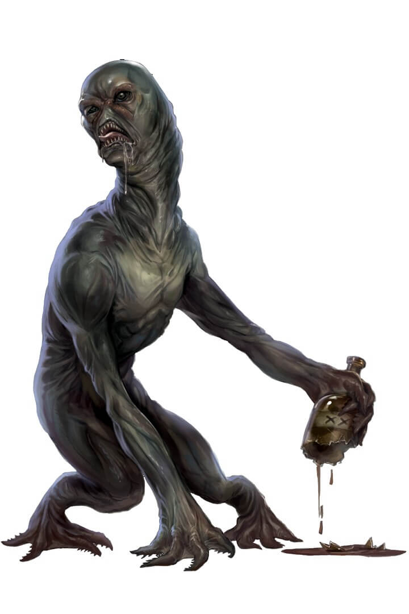
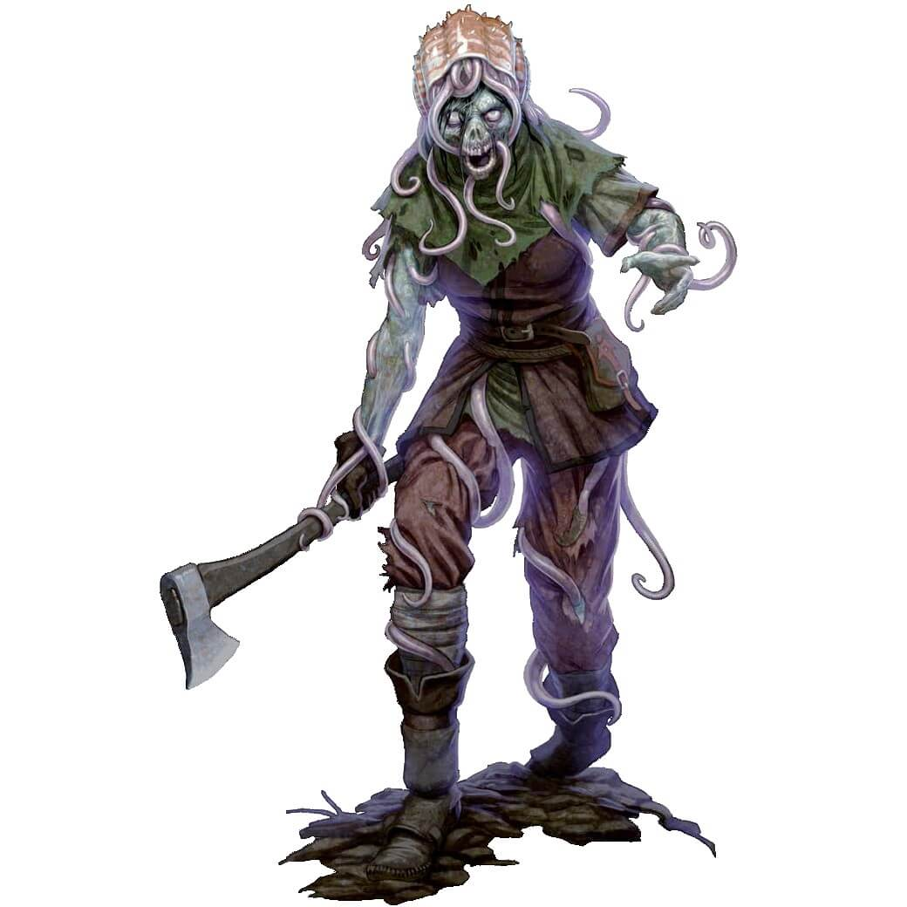

"On our fourth day out of Magnimar, we heard ’em singing. I never heard anything to match it, nor likely will again. Their voices were so high an’ sweet, like songbirds given lyrics. Everyone on deck heard ’em, and we all rushed to the gunnel to peer into the fog. The mists parted, and there they were, as beautiful as they sounded. Hair like silk, eyes like gems, prettier than any maidens with feet I’d ever seen.
"They stopped singing straightaway and were under the water and gone with a flash of their tails. I almost asked the captain to wait, to give us a minute to lure them back out, but then one of them looked back at me before slipping ’neath the waves, and her eyes didn’t look like sapphires no more. They were daggers of ice, set to skewer me clean through. We turned and hauled away as fast as fast, and I’ll be glad if I never see them waters again."
— From the log of Cheriss Tar, swab on the Westerly Swell
Archives and Files
Written information and intelligence collected. This intel can provide insight into motivations, fill in background events, and provide instruction or tips to playing the campaign.
Notable excerpts from journals, letters, documents, and magical intel recovered from expeditions.
Insert Handout p.21
The Green Book
Talmandor's Bounty Chronicle and Weekly Gazette
Session 01-02:Wealday, 3 Abadius, 4718 AR

After a long voyage, the Peregrine arrived at the island Ancorato today, but the colony appeared empty. Lt. Governor Ramona Avandth directed me, Perrell Beys and Chronicler, to begin chronicling a journal of daily events, in the event the colonists are gone, and then she sent the expedition crew ashore while the ship heads up to secondary landing in search of survivors. Many aboard suspect something is amiss, and I myself, at least, have a slow fear gnawing away at me. Maybe we shouldn’t have come? We’re sailing around the isle now, and some are talking about turning back.
P.S. When we later rendezvoused with the expedition team, they explained what happened to them. After valiantly fighting off a pack of grindillows in the bay, the expedition team arrived on shore to a quiet, half-finished town, with not a person in sight. They headed directly to the chapel, hoping to find anyone along the way, but instead were greeted by a phantom that frightened half of them all the way back to shore. Regrouping, they discovered a tiny fae “crab monster” sabotaging their rowboat and a sunken canoe that had been sabotaged. Returning to the chapel, the brave bard, Lucca, was able to translate a series of knocking into the words “Why, Rayland, why, my friend, why betray me, why are we dead?” Thoroughly shaken, the team headed for the town hall, finding journals and records of the island that ended around a month prior with several pages carefully removed. Within the house, the clockworker, Karn, captured a clockwork spy and the party is very keen on finding out who sent it and if it has any connection to the missing settlers.
The expedition team continued to carefully to clear out the remaining buildings in the palisade, and after waterlogging a great deal of necessary food supplies and capturing a goblin, they ended with Governor Arkly’s very own house. Inside, they found the colony charter with many colonist’s names checked off, and an ancient Azlanti timepiece. Unsure of what the check marks could mean, the team resupplied at the pavilion tents, and turned southwards towards the farms. On the way, beneath the only plum tree in the area, the team discovered a small pouch with a letter inside writing about some sort of schism in the group between Una and Rayland. The expedition team suspects some colonists tried to escape, but after finding the sabotaged canoe, they probably did not succeed. Reaching Levin Farm, the expedition team defeated a drunk choker and found a hidden Azlanti Longsword before settling in for a restless night, hoping to find answers in the morning.
Session 03:Oathsday, 4 Abadius, 4718 AR

The ship became stuck a few miles off-shore, as though we'd run aground, but after several hours searching the hull and divers investigating the waters, the reason for us being stuck here isn't known. Ramona went ashore with the marines to search for the colonists, but with no buildings or signal fires, it seems unlikely anyone is here. We signed up to be part of the second wave of a research and colonization expedition, not to die on a cursed island aboard a ship stuck on phantom rocks. A few people have been talking about mutiny, and I'm scared.
Pearl was spooked by a nightmare where she was woken by her mother telling her to run. They ran from the bedroom door down to the water and she dove in after her mother. A great storm tossed the waves as they swam to an island orbited by a floating tower. The broken tower came crashing into the island and Pearl’s mother’s throat bulged out like a frog. She croaked out the word “run” as the dream ended.
P.S. After a surprisingly uneventful night’s rest at the governor’s house, the expedition team searched the rest of the settlement, finding a Blood Maize lying in wait in a field and an Ankeg Mother in a burrow, which the druid, Scekros, set ablaze. They also found the emaciated skeleton of Edwin Fox from the first wave of settlers, but little else. Every signal pointed that the settlers had left very suddenly. When the ship did not return for them at the designated time, the expedition team traveled North-Northwest along the coastline to the rendezvous at Site B. As they traveled along, the group came across a herd of boar that gored both the barbarian and the druid, but brave Pearl and Lucca were able to slay the beasts and heal their team. When they crossed the river in their path, an abberation known as an Incutulus attacked them, wielding the body of Raila Lionheart, another first-wave colonist. Once defeated, the rest of the hike up the coast line was relatively uneventful, with sightings of some indigenous lifeforms such as Sea Lions, Gliding Turtles, and Sahuagin, and a terrifying close encounter with a Smoke Sentinel punctuating landscape. When they finally arrived at Site B, they were able to recount their findings to Ramona, who relayed to them that the ship was unable to move from its current place, even with all of the sails filled with wind. The expedition team declared they would find the source of the problem once they were out at the ship, and settled in to camp with the marines for the night.
Session 04:Fireday, 5 Abadius - Starday, 6 Abadius, 4718 AR
Session 05:Sunday, 7 Abadius - Moonday, 8 Abadius, 4718 AR
Session 06:Toilday, 9 Abadius - Sunday, 21 Abadius, 4718 AR
Session 07-08:Moonday, 22 Abadius, 4718 AR
Session 08-09:Toilday, 23 Abadius - Wheelday, 24 Abadius, 4718 AR
Session 10:Oathsday, 25 Abadius, 4718 AR
Session 11:Fireday, 26 Abadius, 4718 AR
Session 12:Starday, 27 Abadius - Sunday, 10 Pharast, 4718 AR
Session 13:Moonday, 11 Pharast - Toilday, 12 Pharast, 4718 AR
Session 14:Wheelday, 13 Pharast - Sunday, 17 Pharast, 4718 AR